Главный цвет интерьера 2021
Ежегодно мировой производитель премиальных отделочных красок Dulux изучает мнение специалистов в области дизайна, архитектуры и моды и представляет прогноз по колористическим трендам будущего сезона. Ведущим цветом в интерьере 2021 года назван коричнево-бежевый Brave Ground.
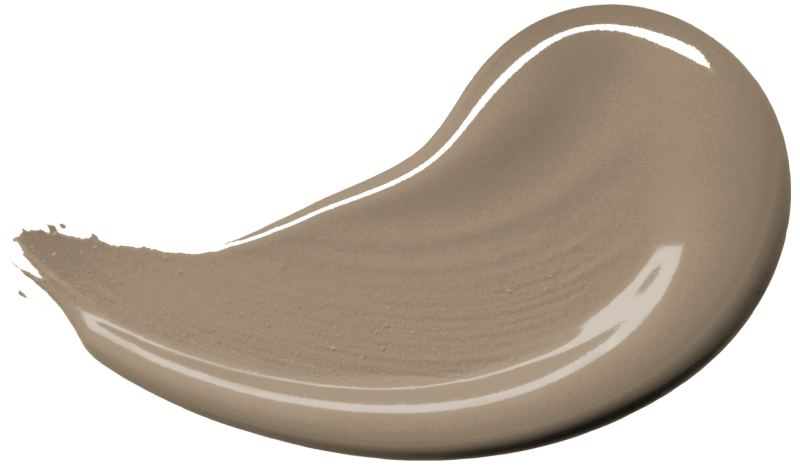Такой выбор вызвал в интернет-пространстве волну критики, ведь многие ожидали чего-то более веселого и яркого в качестве новой тенденции. Однако специалисты советуют разглядеть ценность именно в простоте – нейтральный теплый, естественный оттенок ассоциируется с душевным равновесием, спокойствием, уверенностью, чего нам так не хватает в сегодняшний сложный момент. Красивый тон чутко реагирует на освещение и меняется в интерьере в течение дня. Нанесенный на стены, он будет казаться темным и обволакивающим в ночное время, зато при попадании солнечного света заиграет розовым румянцем.Brave Ground стал главным цветом не потому, что должен поднимать наше настроение и раскрашивать дома. Его выбрали, т.к. он придает тепло и глубину, дополняет яркие и смелые тона, которые можно и нужно сочетать с ним. Землисто-бежевый оттенок легко позволяет сиять краскам-компаньонам в оформлении жилых и общественных пространств. Источником вдохновения служат четыре палитры – примеры комбинирования.
Модные цвета в интерьере 2021
Если Dulux сделал ставку на мягкие и нейтральные краски как основу душевного спокойствия людей, то другой законодатель в мире дизайна и моды – американский институт цвета Pantone – анонсировал более широкую и насыщенную гамму в зимнем и весенне-летнем вариантах.
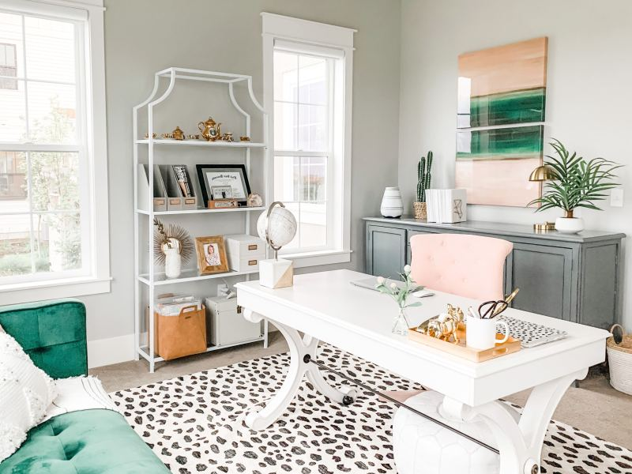Итак, какие же цвета 2021 года в интерьере по версии Pantone станут популярными и знаковыми?
Зимняя палитра будущего сезона включает красивые темные и светлые оттенки, прекрасно подходящие для мебели.
Ультрамариновый зеленый
Глубокий сочный тон великолепно сморится на классическом бархатном диване с каретной стяжкой на высокой спинке и основанием из матовой состаренной латуни.
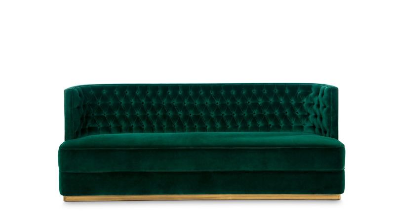Миндальное масло
Нежный и прохладный оттенок отлично подойдет для современной мягкой мебели в окружении брутальных серых стен и открытого пространства городской квартиры.
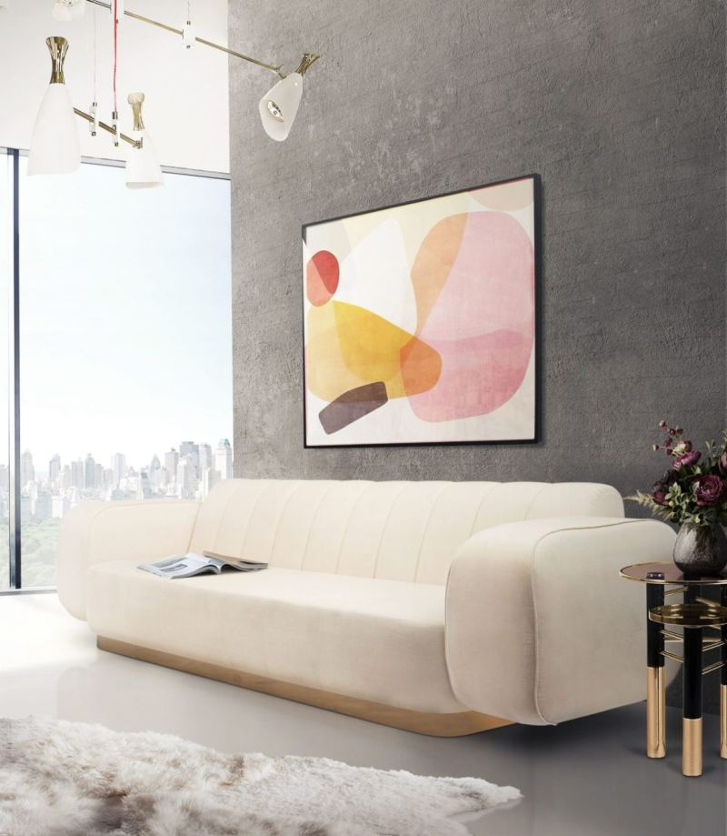Янтарное сияние
Темно-оранжевый цвет очень красиво выглядит на обеденных стульях с обивкой из хлопкового бархата и вращающимся основанием из полированной латуни. Яркий акцент для любой обстановки.
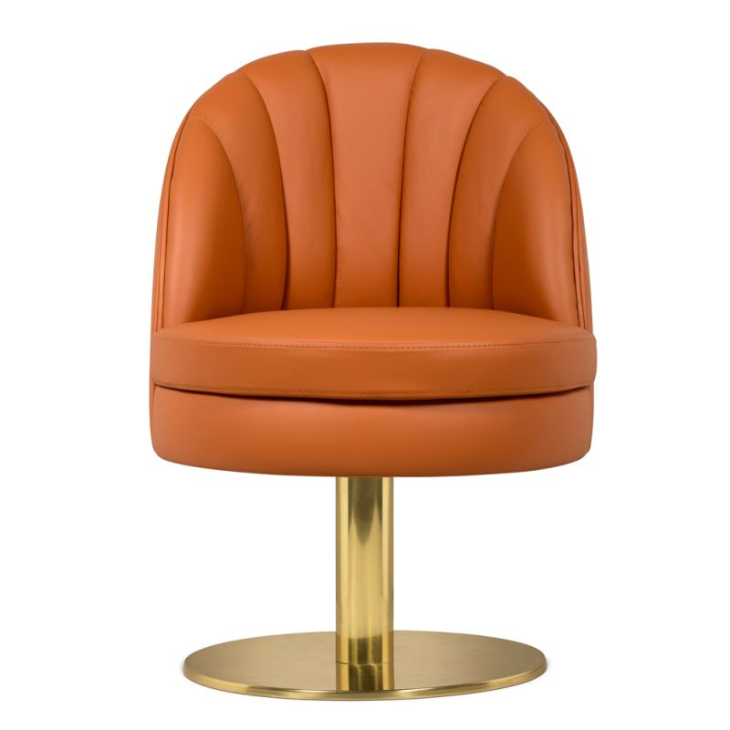Самба
Приглушенный зрелый красный цвет прекрасно сочетается с металлом и зеркалами. Пример оригинального использования – шикарный комод с мраморной столешницей, обтянутый бархатом.
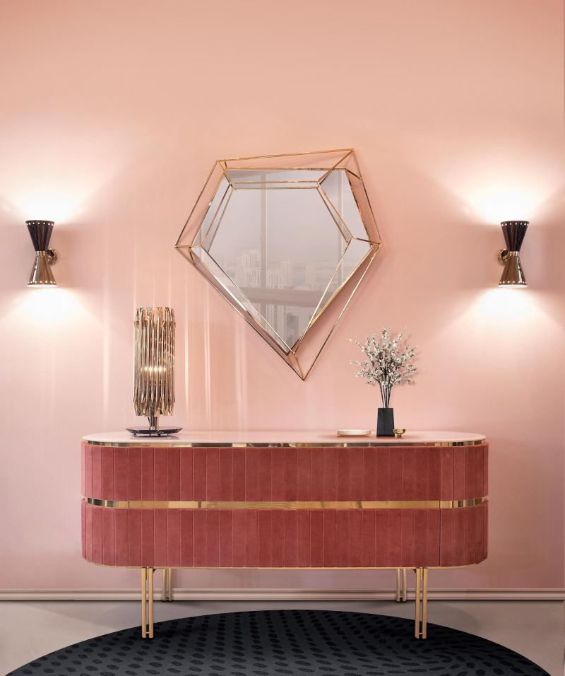Приглушенный зрелый красный цвет прекрасно сочетается с металлом и зеркалами. Пример оригинального использования – шикарный комод с мраморной столешницей, обтянутый бархатом.
- теплый золотисто-оранжевый;
- небесный;
- земляной коричневый;
- солнечный желтый;
- глубокий синий;
- ментоловый зеленый;
Оттенки воспринимаются комфортными, спокойными и одновременно заряжают энергией и поднимают настроение.
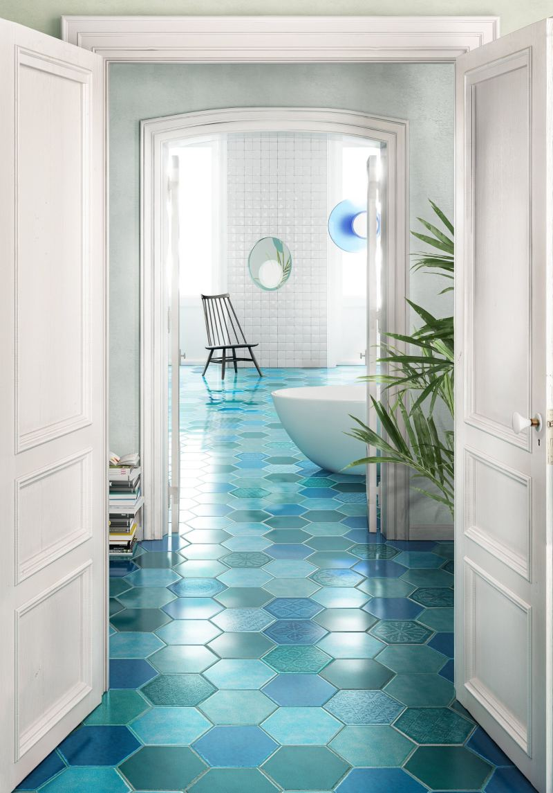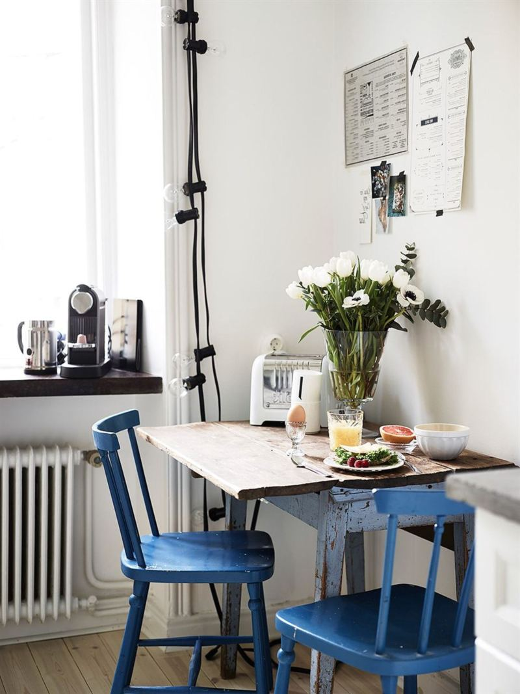
Дизайн гостиной 2021: минималистичный богемный шик
Идея в том, чтобы заменить простой геометрической фигурой или формой более сложный объект или целую композицию. Пространства с небольшим количеством предметов мебели, дополненные элементами роскоши и изделиями ручной работы, – один из актуальных трендов.
В модном интерьере гостиной 2020 – 2021 торжествует концепция "меньше да лучше", которая реализуется через использование дерева, металла, ворсистых ковров, пледов, живых растений.
Несколько гламурных деталей заставят обстановку блистать:
- металлический глянец внесут бронзовые, золотые, хромированные элементы;
- с металлом великолепно сочетается бархатная обивка диванов и кресел.
Мягкая мебель имеет красивые закругленные углы и продолговатые формы, палитру природных материалов. Популярный ретро-стиль в духе 70 – 80-х годов заявляет о себе желтыми, оранжевыми, коричневыми цветами. Такие диванные группы обозначат свежий акцент в гостиной дома или квартиры.
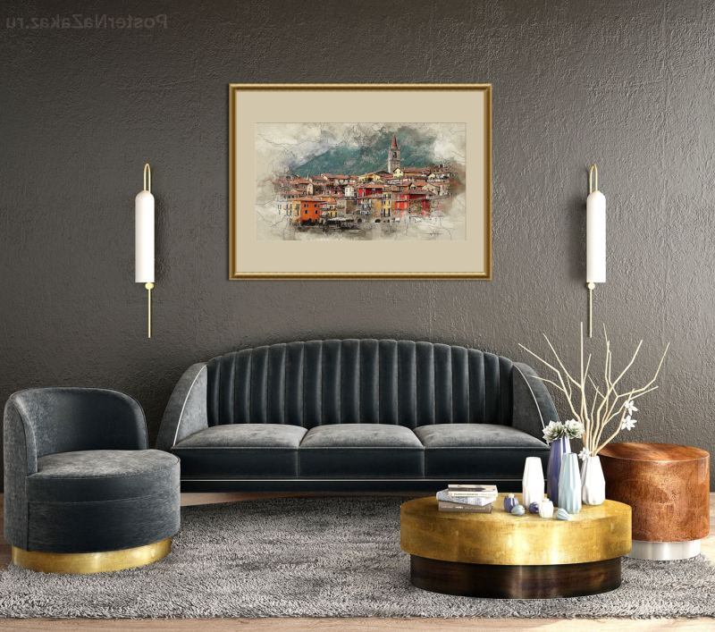Тактильный дизайн
Сосредоточенность на физическом ощущении от окружающих нас текстур во времена самоизоляции стала гораздо выше. Мы хотим чувствовать рядом естественные покрытия и материалы: дерево, камень, шерсть, лен – в противоположность стерильным гладким экранам компьютерных мониторов. Причем интересна не просто натуральная текстура, а ее ярко выраженный характер: грубая каменная плита, необработанная древесина. И чем меньше имитаций, тем лучше. Оформление гостиной в новом сезоне пройдет под знаком тактильного восприятия.
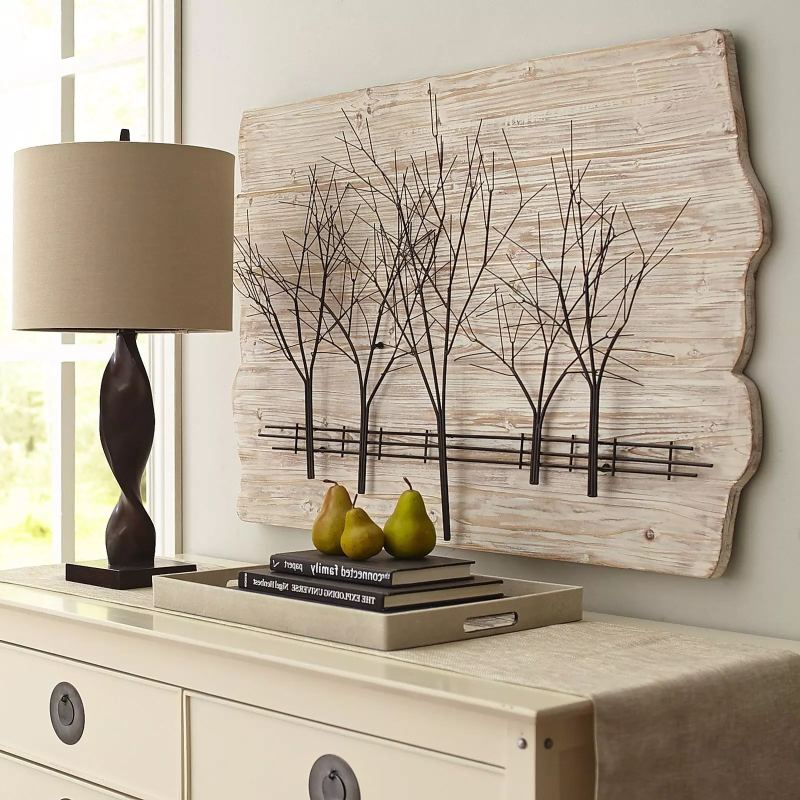Дизайн кухни 2021 года
Интерьерные тенденции, набравшие силу в прошлые сезоны, продолжают быть актуальными. И прежде всего речь про колористику. Цветовые решения в дизайне кухни 2020-2021 по-прежнему подчеркивают природную тематику и стараются быть максимально гармоничными.
Классический синий
Минималистичный и элегантный тон прекрасно подходит для кухонных фасадов в современном и традиционном исполнении. Великолепно сочетается с белыми, светло-серыми, стальными оттенками, золотистым декором, фактурой натурального дерева. Обычно играет роль самого темного элемента отделки.
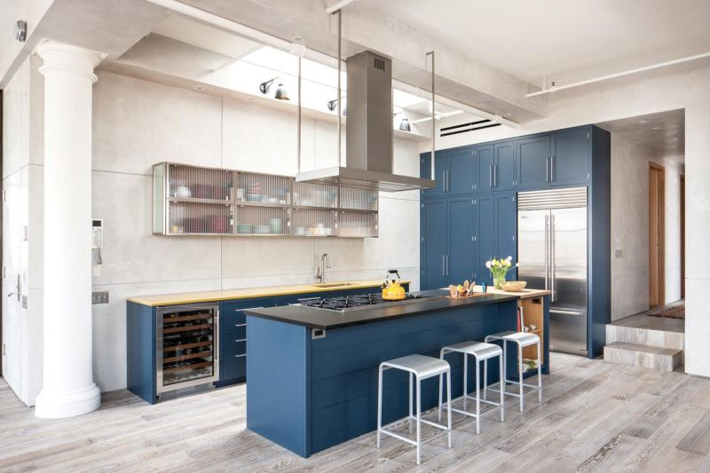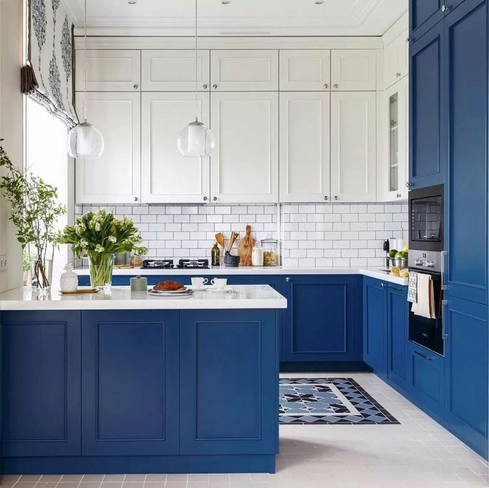
Темно-зеленый
Цвет, вдохновленный природой, останется популярным на долгие годы. Применяется в оформлении не только гарнитура, но и стен, фартука.
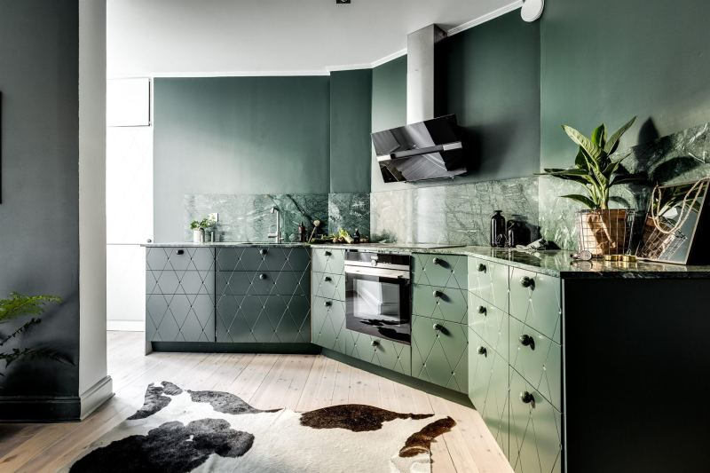Нейтральный фон
Его задача – создавать в интерьере кухни интимную и гостеприимную среду. В окружении ненавязчивых, с низкой насыщенностью и не перетягивающих на себя внимание бежевых, кремовых, песочных и пр. оттенков проще сосредоточиться на ценности общения и личности друг друга.
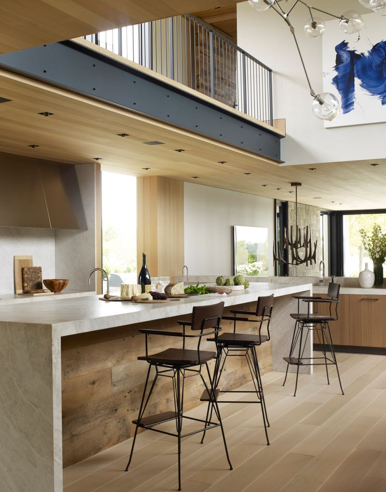Современное ретро
Модный дизайн кухни 2021 не мыслим без стилистики 70 – 80-х. Причем не в виде бездумного копирования, а как переосмысление в эстетически более сдержанном варианте.
Палитра невероятно привлекательная: желтые, апельсиновые, тыквенные, оливковые, зеленые, коричневые, мандариновые краски, теплые и мягкие цвета авокадо, пшеничных колосьев, подсолнуха, богемный пурпурный, бирюзовый. Сочные тона преображают пространство, а для равновесия вводится нейтральный белый. Способы включения цветов в кухонный интерьер – мебельные фасады, отделка "острова", окрашенные стены, мозаичная облицовка, керамический фартук, посуда и элементы текстиля.
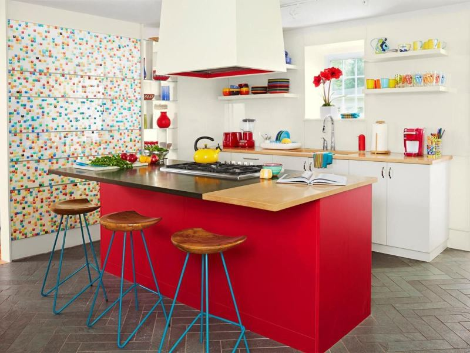Дизайн ванной комнаты в 2021 году
Профессиональный интерьер санузла интересен тем, что сочетает практические функции и эстетику. В новом сезоне сохранят позиции популярные декоративные тенденции последних лет.
Масштабная отделка мрамором
Можно не ограничивать себя в использовании каменной плитки и покрыть все поверхности. За счет гладкой текстуры и светлых тонов помещение будет казаться длиннее и шире.
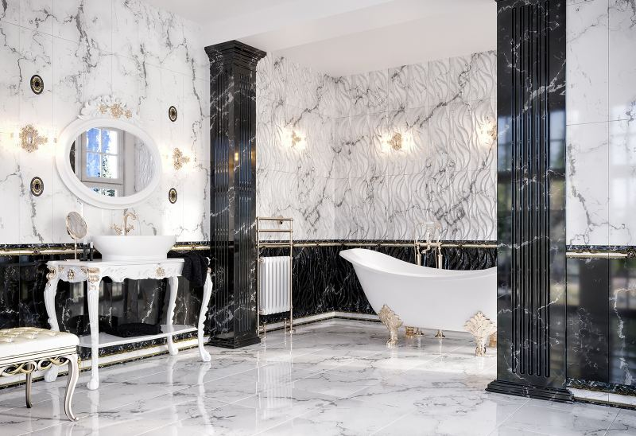 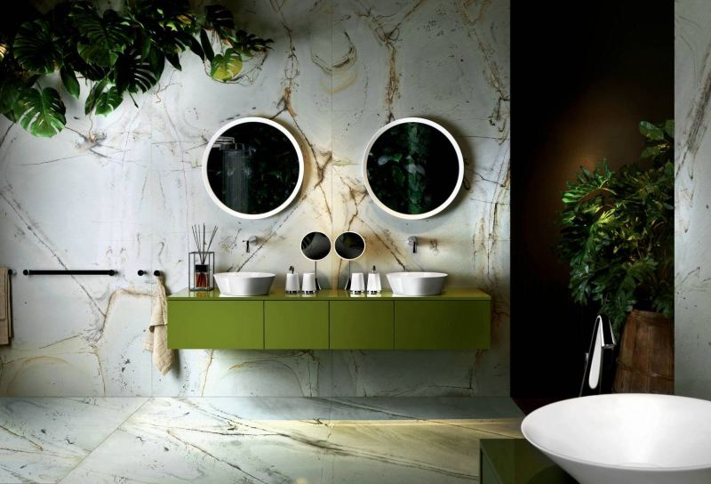Мрамор присутствует не только в облицовке стен и пола, но и вдохновляет бренды-производители на создание сантехники необычной формы. Например, раковины в виде стилизованного древесного пня, умывальника с обтекаемыми краями, круглой ванны на подиуме.
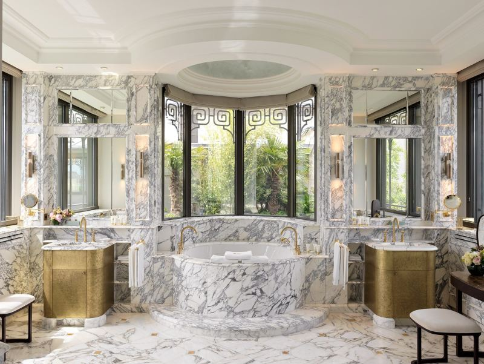Круглые зеркала с подсветкой
Могут быть парными, одиночными или составлять асимметричную композицию. Скрытая светодиодная подсветка создает эффект парения, что всегда чрезвычайно стильно выглядит на темном фоне.
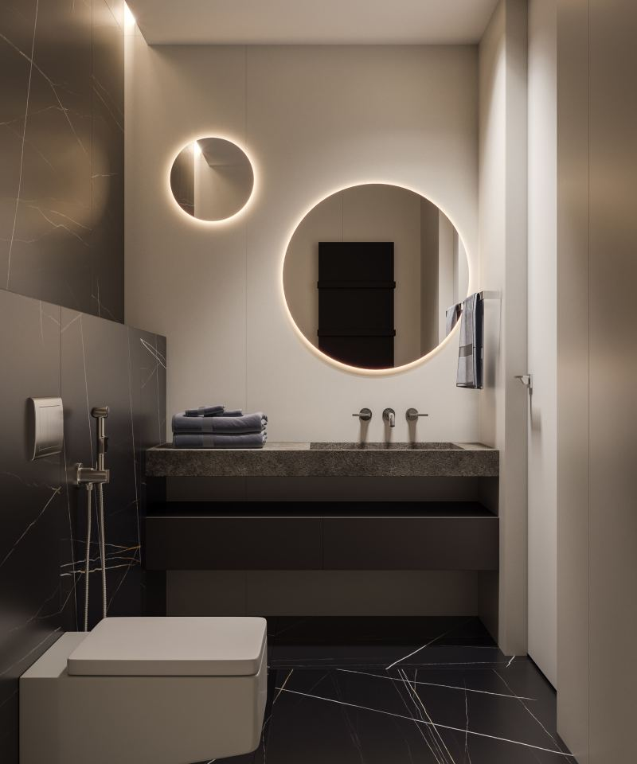Природные элементы
Оформление ванной комнаты следует трендам в дизайне интерьера 2021 и активно использует природный декор. Это касается не только отделки стен и пола деревом, сланцевой плиткой, использования гальки, живых растений. Нужный результат помогут получить оригинальная сантехника и мебель. Например, грубая каменная чаша умывальника или подвесной деревянный шкаф с перевернутым горным силуэтом.
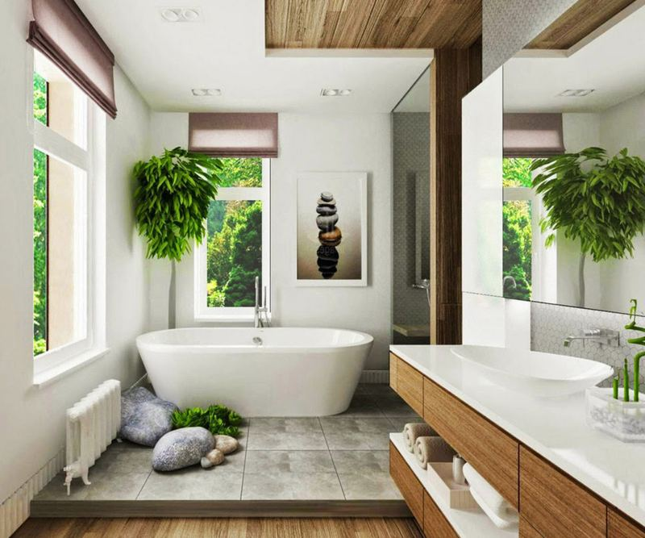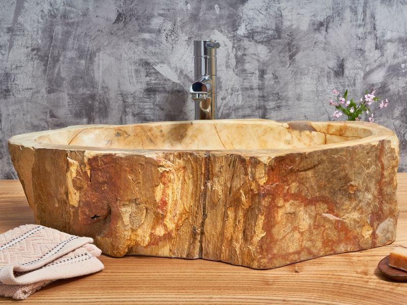
Освещение
Тренды освещения в дизайне интерьера 2020-2021 задают не только маститые производители, но и талантливые молодые проектировщики со всего мира. Международная премия A’Design Award выделила несколько оригинальных моделей, которые заслуживают оказаться в наших домах и офисах.
Минималистичный дизайн
Акцент в небольшой настольной лампе сделан не на внешнюю привлекательность, а на саму систему управления освещением. Пользователь может контролировать интенсивность света, а еще регулировать верхний световой луч с помощью диафрагмы, как на фотоаппарате. Простая форма светильника помогает сосредоточиться на чистой функции.
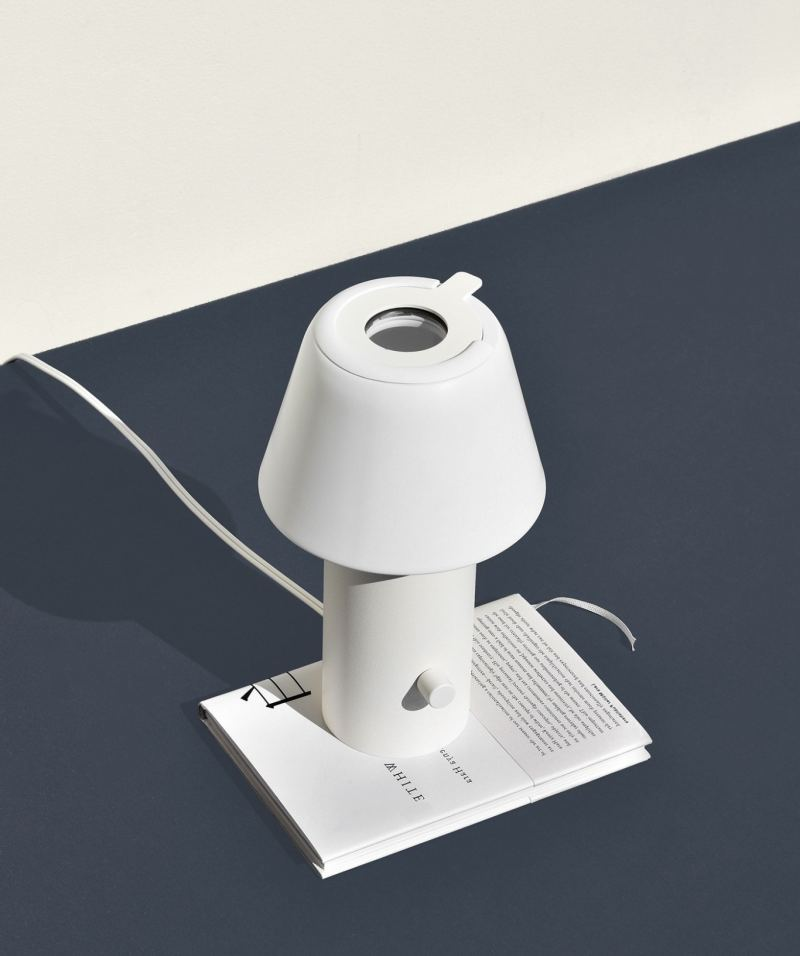Лампа Мебиуса
Подвесная модель воплощает в себе загадочную математическую красоту. А с практической точки зрения имеет рабочую лицевую и оборотную поверхности со встроенной светодиодной лентой и удовлетворяет потребности в освещении со всех сторон. Конструкция изготовлена из акрила и бамбука, сложная форма получается в процессе термогибки.
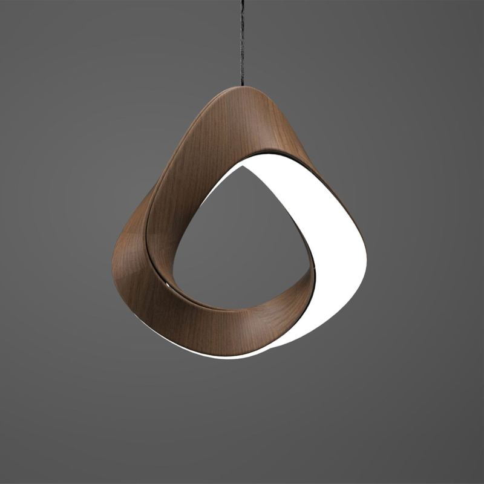Пузырьковые подвесные сферы
Этот тренд интерьерного освещения сохраняется на протяжении многих сезонов и встречается в коллекциях многих брендов. Забавное элегантное добавление к любому частному или гостиничному пространству.
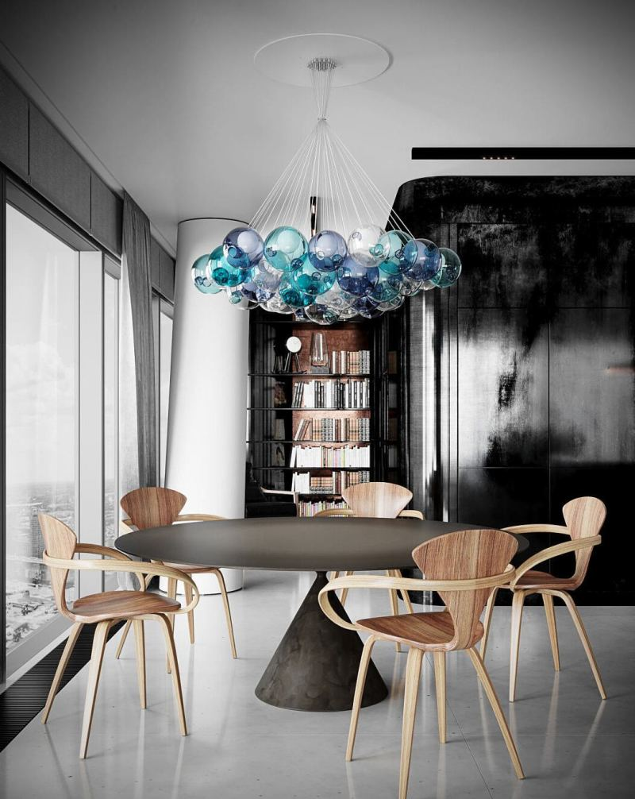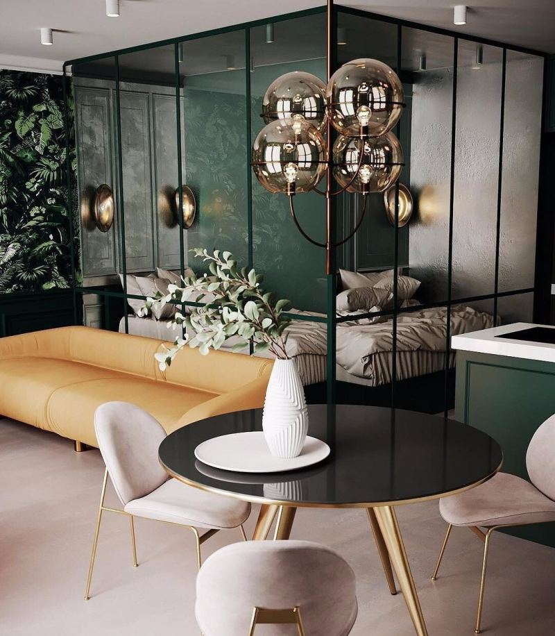